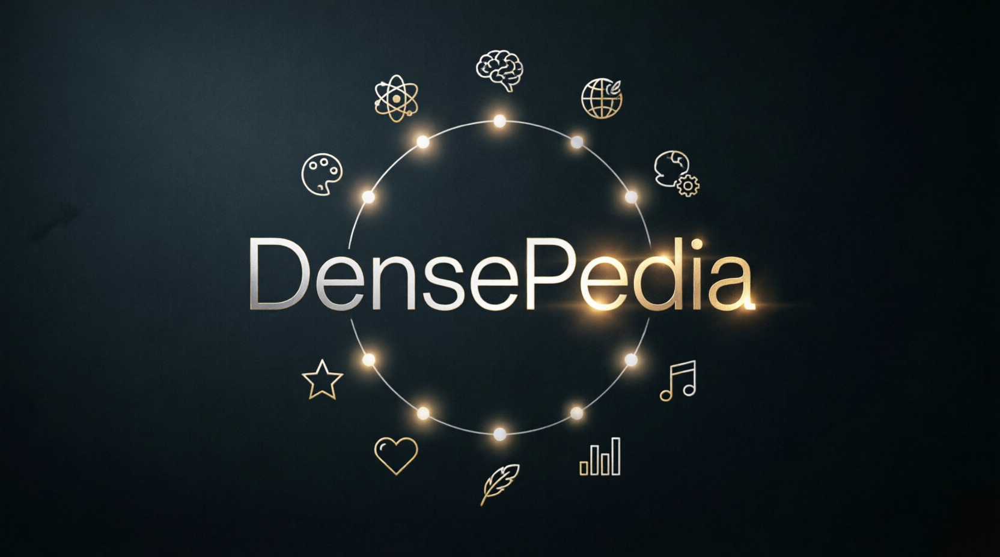

📚 Добро пожаловать в DensePedia
Структурированная база знаний Senior-инженера: 40+ разделов, 200+ статей с фактами, примерами кода и чек-листами — от безопасности и архитектуры до фреймворков и системного дизайна.
Выберите раздел и статью в боковой панели, чтобы начать чтение.
Автор: Vitali Semianiaka — проект создан за 6 часов, затраты на LLM < $3
⭐ GitHub · 🔗 LinkedIn #OpenToWork
🚀 Как запустить viewer (1 строка)
python3 -m http.server 8080 # Python
npx serve . -p 8080 # Node.js
npx http-server -p 8080 # Node.js (alt)
php -S localhost:8080 # PHP
ruby -run -e httpd . -p 8080 # Ruby
deno run -A jsr:@std/http/file-server # Deno
dotnet tool install --global dotnet-serve ; dotnet serve --port 8080 # .NET
caddy file-server --listen :8080 # Caddy44
Раздел
200+
Статей
4
Группы